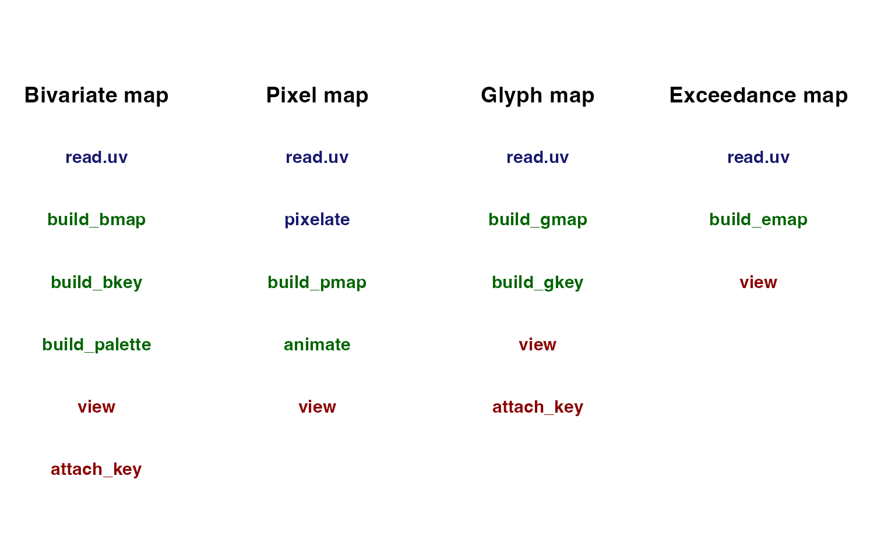
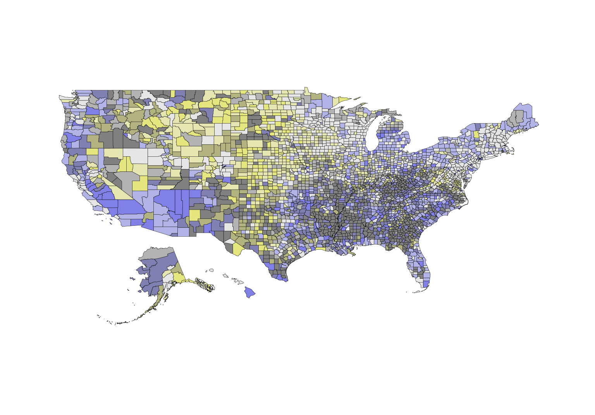
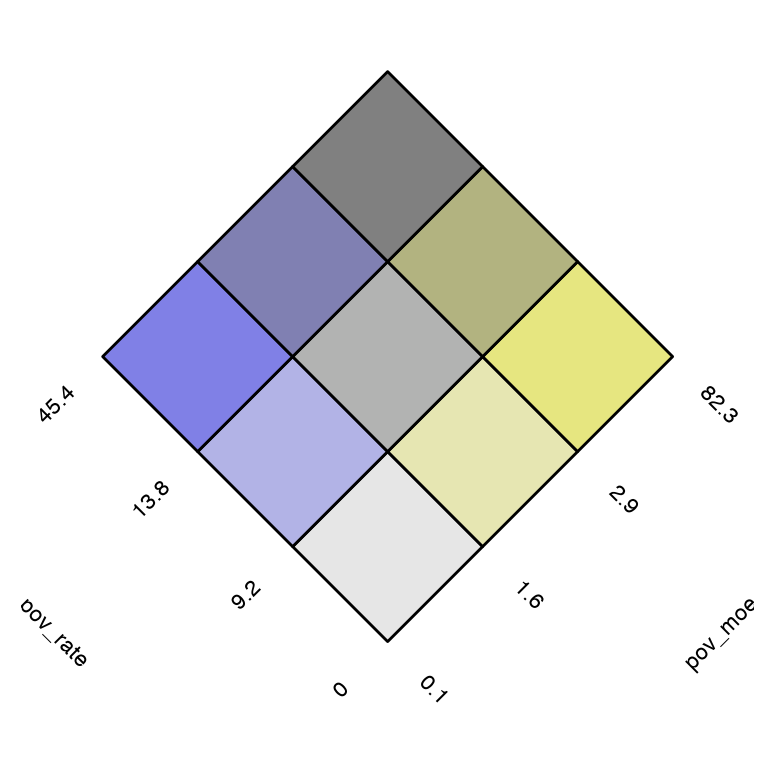
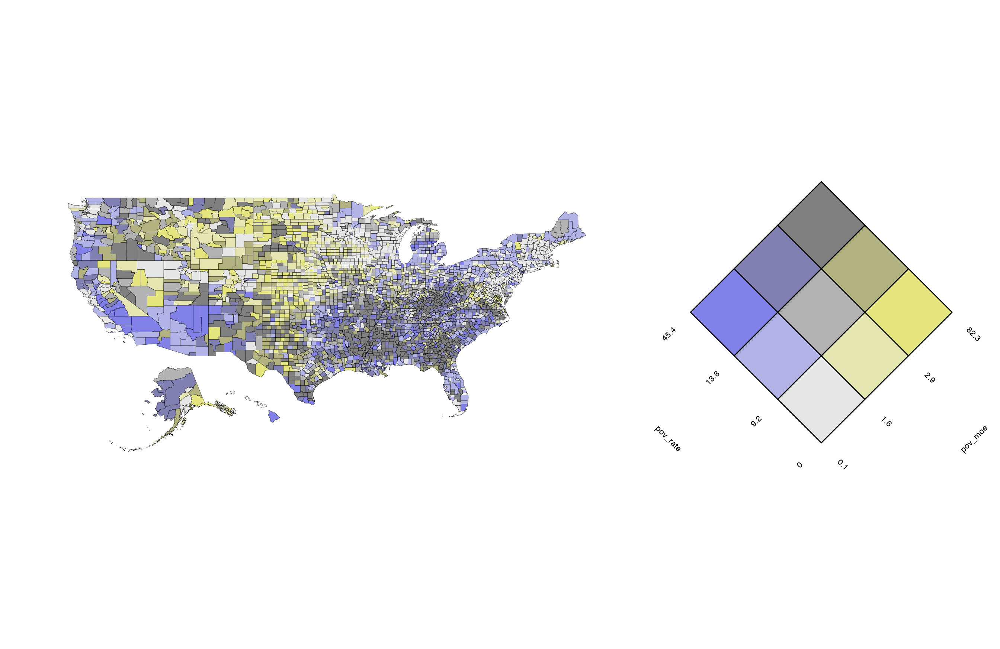
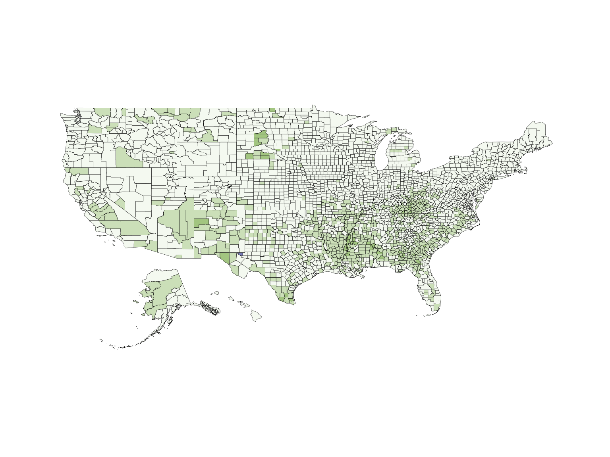
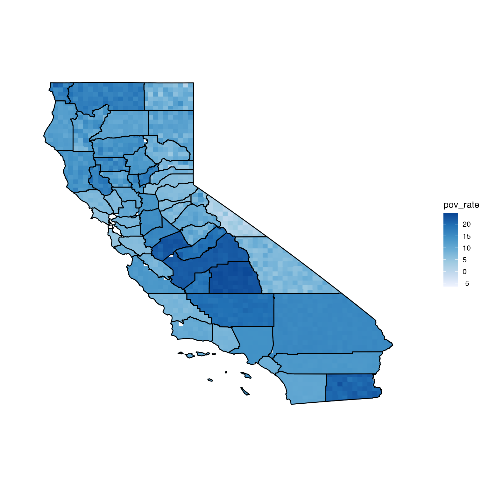
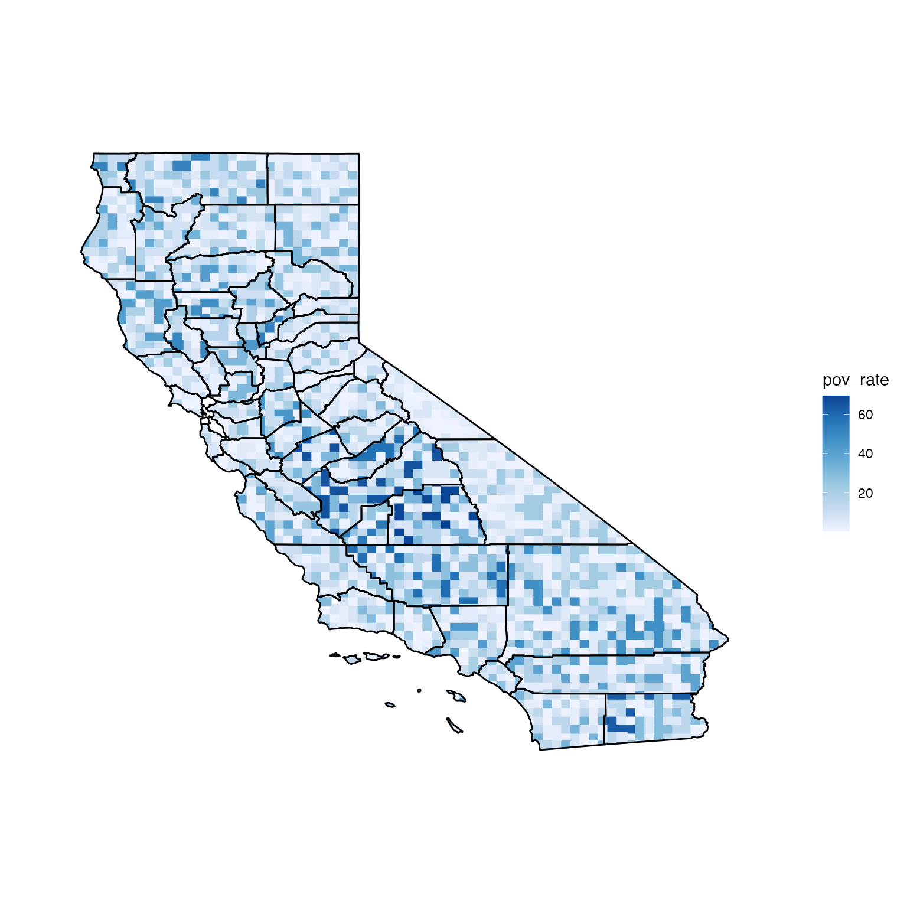
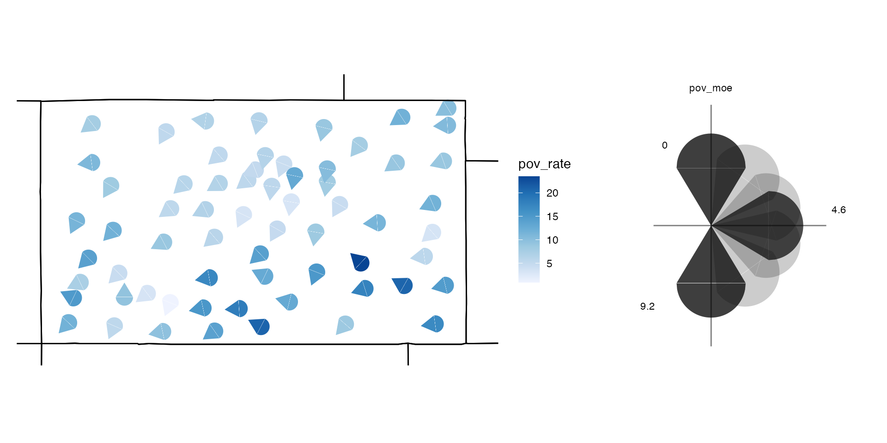
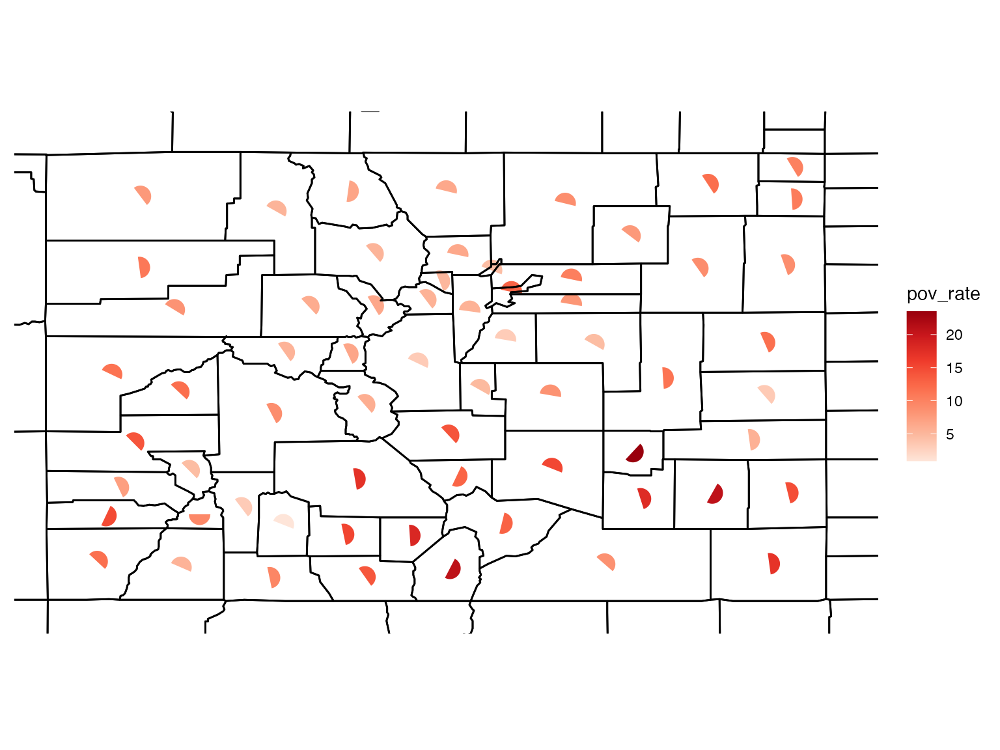
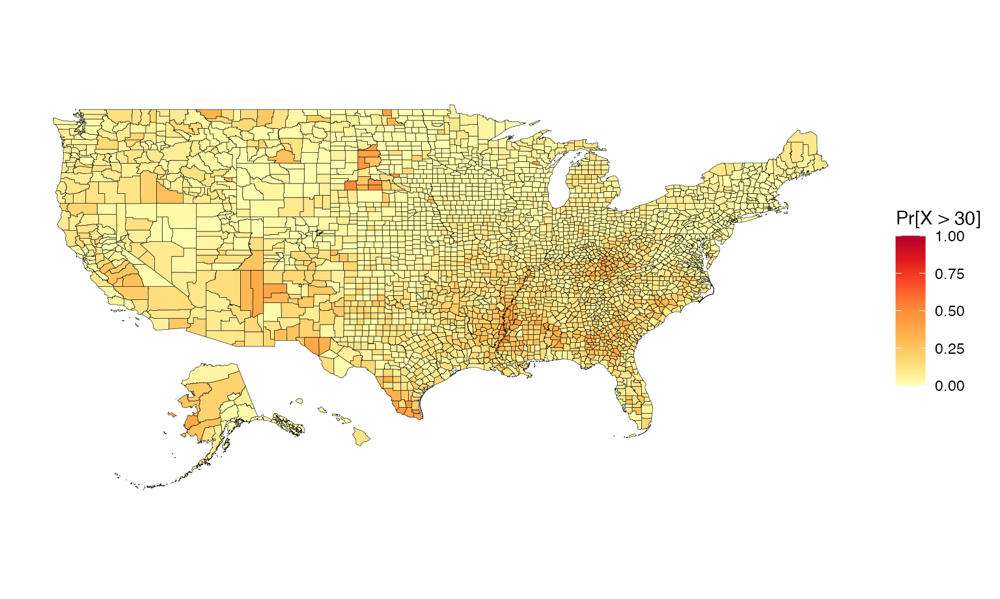

Vizumap is a tool for visualising uncertainty in spatial data. This vignette demonstrates how to use the package to create bivariate maps, pixel maps, glyph maps, and exceedance probability maps. We have tried to generalise the visualisation approaches so that they are applicable for most types of spatial data.
There are three types of functions in Vizumap: formatting functions, building functions, and viewing functions. Formatting functions prepare data frames and spatial polygons for use in building functions. Building functions create maps, animations, keys, and colour palettes. Viewing functions plot these objects. Some of these functions are useful across all four map types, such as read.uv, and others are map specific, such as pixelate. Below is a table displaying the functions that can be used with each map type. Blue functions format. Green functions create. Red functions plot.

Data
One of the included datasets in the Vizumap package is us_data, which contains the estimated family poverty rates for all US counties in 2015. Also included is a spatial polygons data frame for a US county map (us_geo), which can be used to map the estimates and errors in us_data. These data come from the US Census Bureau Fact Finder website, and documentation can be found under ?us_data and ?us_geo.
## GEO_ID GEO.id2 GEO.display.label pov_rate pov_moe
## 1 0500000US01001 1001 Autauga County, Alabama 9.3 1.9
## 2 0500000US01003 1003 Baldwin County, Alabama 9.6 1.1
## 3 0500000US01005 1005 Barbour County, Alabama 19.5 2.8
## 4 0500000US01007 1007 Bibb County, Alabama 12.8 4.4
## 5 0500000US01009 1009 Blount County, Alabama 12.3 2.0
## 6 0500000US01011 1011 Bullock County, Alabama 22.7 6.5
data(us_geo)Building bivariate maps
A bivariate map is based on a bivariate colour palette, which is created by blending two single hue colour palettes. One colour palette represents the variable of interest while the other represents the uncertainty. When the palettes are blended, each colour in the new palette becomes representative of both a variable class and uncertainty class.
There are four pre-prepared bivariate colour palettes included in Vizumap: 'BlueYellow', 'CyanMagenta', 'BlueRed' and 'GreenBlue'.
# use one of four pre-prepared colour palettes
cmBivPal <- build_palette(name = "CyanMagenta")
view(cmBivPal)
You can also design your own bivariate colour palette with build_palette. Instead of entering one of the four pre-prepared palettes into name, you enter 'usr'. If you choose two light colours when creating your own palette, the palette will lack important differences in colour across the grid. Therefore, it is best to use two darker colours. For example, 'chartreusu4' and 'darkblue' work better than 'tan2' and 'lightskyblue' (see comparison below). The numeric vector passed to difC controls the colour change across each single hue colour gradient.
# test two light colours with low difC values
# creates a bad palette
customBivPal1 <- build_palette(name = "usr", colrange = list(colour = c("tan2", "lightskyblue"), difC = c(1, 1)))
view(customBivPal1)
# change colours for a better palette
customBivPal2 <- build_palette(name = "usr", colrange = list(colour = c("chartreuse4", "darkblue"), difC = c(1, 1)))
view(customBivPal2)
# change difC values to increase colour differences
customBivPal3 <- build_palette(name = "usr", colrange = list(colour = c("chartreuse4", "darkblue"), difC = c(3, 4)))
view(customBivPal3)A bivariate map can be used to simultaneously visualise the estimates and errors in us_data. Before the data frame of estimates and errors is passed to build_bmap, it must be formatted with read.uv as the estimates and errors need to be in the first and second columns of the data frame. You can also import a dataset by passing a CSV file pathway to file.
## GEO_ID GEO.id2 GEO.display.label pov_rate pov_moe
## 1 0500000US01001 1001 Autauga County, Alabama 9.3 1.9
## 2 0500000US01003 1003 Baldwin County, Alabama 9.6 1.1
## 3 0500000US01005 1005 Barbour County, Alabama 19.5 2.8
## 4 0500000US01007 1007 Bibb County, Alabama 12.8 4.4
## 5 0500000US01009 1009 Blount County, Alabama 12.3 2.0
## 6 0500000US01011 1011 Bullock County, Alabama 22.7 6.5
# format data frame
poverty <- read.uv(data = us_data, estimate = "pov_rate", error = "pov_moe")
# estimates and errors are now in the first two columns
head(poverty)## pov_rate pov_moe GEO_ID GEO.id2 GEO.display.label
## 1 9.3 1.9 0500000US01001 1001 Autauga County, Alabama
## 2 9.6 1.1 0500000US01003 1003 Baldwin County, Alabama
## 3 19.5 2.8 0500000US01005 1005 Barbour County, Alabama
## 4 12.8 4.4 0500000US01007 1007 Bibb County, Alabama
## 5 12.3 2.0 0500000US01009 1009 Blount County, Alabama
## 6 22.7 6.5 0500000US01011 1011 Bullock County, AlabamaIn this example, terciles are used to define the numerical bounds for the different estimate and error classes because the dataset contains several outliers.
# build a bivariate map with the map data
usBivMap <- build_bmap(data = poverty, geoData = us_geo, id = "GEO_ID", terciles = TRUE)
view(usBivMap)
Keys for the bivariate maps are not automatically generated with build_bmap and must be created separately with build_bkey. It is important that the key arguments match the map arguments. For example, if terciles was set to FALSE, the key would not accurately reflect the county colour assignments for this example US map.
# build a key
usBivKey <- build_bkey(data = poverty, terciles = TRUE)
view(usBivKey)
Maps and keys can be viewed together with attach_key.
attach_key(usBivMap, usBivKey)
Changing the terciles and palette arguments leads to a map that looks very different than the previous map even though it is displaying the same dataset. Here the custom colour palette is used.
# make some changes
usBivMapDif <- build_bmap(data = poverty, geoData = us_geo, id = "GEO_ID", terciles = FALSE, palette = customBivPal3)
view(usBivMapDif)
Building pixel maps
Pixel maps are created by pixelating regions and assigning each pixel in a region a value from an estimate’s confidence interval or discrete relative frequency distribution. The first step is to format the data frame containing the data with read.uv and pixelate the map with pixelate.
A California county map will be used to illustrate the method. A subset of us_data that contains only California estimates and errors is created.
data(us_data)
us_data$GEO.id2 <- as.numeric(us_data$GEO.id2)
ca_data <- subset(us_data, us_data$GEO.id2 > 6000 & us_data$GEO.id2 < 7000)
ca_data <- read.uv(data = ca_data, estimate = "pov_rate", error = "pov_moe")
row.names(ca_data) <- seq(1, nrow(ca_data), 1)The county polygons for California are extracted from us_geo and pixelated with pixelate. It can take several minutes to pixelate a shapefile depending on the size of the shapefile.
data(us_geo)
ca_geo <- subset(us_geo, us_geo@data$STATE == "06")
pix <- pixelate(ca_geo, id = "region")## Warning in wkt(obj): CRS object has no commentThere must be a shared column between ca_data and pix. Depending on your shapefile, getting this shared column might require some creativity. pixelate returns a column that contains the slot IDs for the polygons. Adding these slot IDs to ca_data through the GEO_ID column present in both ca_data and ca_geo creates a shared column that can be used for the id argument in build_pmap. Ultimately, if the shapefile slot IDs are not referenced in your data frame of estimates and errors, you will need to find a way to way to get this information added to your data frame of estimates and errors before using build_pmap.
df <- data.frame(region = sapply(slot(ca_geo, "polygons"), function(x) slot(x, "ID")), name = unique(ca_geo@data$GEO_ID))
ca_data$region <- df[match(ca_data$GEO_ID, df$name), 1]
ca_data$region <- as.character(ca_data$region)
# check that values in shared column match
all(ca_data$region %in% pix$region)## [1] TRUEIf distribution = "uniform", the values are sampled uniformly from an interval, where the lower bound is the estimate minus the error and the upper bound is the estimate plus the error. For the estimates and margins of error in us_data, this interval corresponds to the estimate’s 90% confidence interval.
# uniform distribution
unifPixMap <- build_pmap(data = ca_data, distribution = "uniform", pixelGeo = pix, id = "region", border = ca_geo)
view(unifPixMap)## Warning: `guides(<scale> = FALSE)` is deprecated. Please use `guides(<scale> =
## "none")` instead.
If distribution = "normal", the values assigned to pixels will be drawn from normal distributions parameterised using the estimates and errors (means and standard deviations).
# normal distribution
ca_data$se <- ca_data$pov_moe / 1.645
ca_data <- read.uv(data = ca_data, estimate = "pov_rate", error = "se")
normPixMap <- build_pmap(data = ca_data, distribution = "normal", pixelGeo = pix, id = "region", border = ca_geo)
view(normPixMap)## Warning: `guides(<scale> = FALSE)` is deprecated. Please use `guides(<scale> =
## "none")` instead.
If distribution = "discrete", a data frame of quantiles, which define the relative frequency distributions for the estimates, must be passed to q. Below is what the California map would look like if the relative frequency distributions for the estimates followed exponential distributions.
# experiment with discrete distribution
# exponential - example for q argument
ca_data.q <- with(ca_data, data.frame(p0.05 = qexp(0.05, 1/pov_rate), p0.25 = qexp(0.25, 1/pov_rate), p0.5 = qexp(0.5, 1/pov_rate), p0.75 = qexp(0.75, 1/pov_rate), p0.95 = qexp(0.95, 1/pov_rate)))
head(ca_data.q)## p0.05 p0.25 p0.5 p0.75 p0.95
## 1 0.4359930 2.445298 5.891751 11.783502 25.46372
## 2 0.4308637 2.416529 5.822436 11.644873 25.16415
## 3 0.3590531 2.013775 4.852030 9.704061 20.97013
## 4 0.6719422 3.768635 9.080228 18.160456 39.24409
## 5 0.4000877 2.243920 5.406548 10.813096 23.36671
## 6 0.6103902 3.423417 8.248451 16.496903 35.64921
discPixMap <- build_pmap(data = ca_data, distribution = "discrete",
pixelGeo = pix, id = "region", q = ca_data.q, border = ca_geo)
view(discPixMap)## Warning: `guides(<scale> = FALSE)` is deprecated. Please use `guides(<scale> =
## "none")` instead.
Pixel maps can be animated with animate so that the pixels flicker between a series of assigned values. view saves the animation to your computer as an html file and automatically opens a browser to view it. A longer aniLength corresponds to a longer animation as well as a longer running time. Generating the animation with view can take several minutes.
# animate the normal distribution map
normPixAni <- animate(normPixMap, aniLength = 30)
# view(normPixAni)Building glyph maps
The process of creating a glyph map is very similar to the process of creating a bivariate map. The data are formatted; the map is created; the key is created; and the two are merged. Glyphs are plotted at either region centroids or specific sites, and the colour and rotation of the glyph represent the variable of interest and the uncertainty. The method is illustrated below with a Colorado county map.
The datasets are loaded and subsetted. co_data is formatted with read.uv for use in build_gmap and buid_gkey.
data(us_data)
data(us_geo)
co_geo <- subset(us_geo, us_geo@data$STATE == "08")
us_data$GEO.id2 <- as.numeric(us_data$GEO.id2)
co_data <- subset(us_data, us_data$GEO.id2 > 8000 & us_data$GEO.id2 < 9000)
co_data <- read.uv(data = co_data, estimate = "pov_rate", error = "pov_moe")Because geoData is included in this example, the build_gmap function will plot a glyph at each region centroid. The colour of the glyph represents the estimated poverty rate among families, and the rotation of the glyph represents the margin of error for the estimate.
# build a glyph map
usGlyphMap <- build_gmap(data = co_data, geoData = co_geo, id = "GEO_ID", size = 80, glyph = "icone", border = "state")
view(usGlyphMap)
Keys for glyph maps are not automatically generated with build_gmap and must be created separately with build_gkey. It is important that the key arguments match the map arguments.
# build a glyph key
usGlyphKey <- build_gkey(data = co_data, glyph = "icone")
view(usGlyphKey)
Maps and keys can be viewed together with attach_key.
attach_key(usGlyphMap, usGlyphKey)
You can change the size, shape, and colour of the glyphs as well as add different borders.
# build a glyph map
usGlyphMapDif <- build_gmap(data = co_data, geoData = co_geo, id = "GEO_ID", size = 70, border = "county", glyph = "semi", palette = "Reds")
view(usGlyphMapDif)
Building exceedance probability maps
Exceedance maps plot the probability of exceeding some nominated threshold of concern. The UB dataset included in the package contains pre-calculated exceedance probabilities. However, the us_data data frame does not contain pre-calculated exceedance probabilities, and these will therefore need to be generated. First, a threshold needs to be selected - let’s choose a poverty rate of 30%.
# load data
data(us_data)
data(us_geo)
# format the data
poverty <- read.uv(data = us_data, estimate = "pov_rate", error = "pov_moe")
# check variable quantiles
quantile(us_data$pov_rate)## 0% 25% 50% 75% 100%
## 0.0 8.1 11.3 15.1 45.4An exponential distribution is an appropriate choice for this application (a normal distribution would not be). A list containing information about the distribution and threshold is passed to the build_emap function, where the probabilities are calculated and plotted. Below is an example of how to prepare this list.
# define probability distribution (exponential distribution)
pd <- quote({ pexp(q, rate, lower.tail = FALSE) })
# define argument listing
args <- quote({ list(rate = 1/estimate) })
# capture distribution and arguments in a single list
pdflist <- list(dist = pd, args = args, th = 30)Finally, we build the exceedance map using the build_emap function. We need to supply the formatted data frame, instructions for calculating the exceedance probabilities, and information about map design.
usExcMap <- build_emap(data = poverty, pdflist = pdflist, geoData = us_geo, id = "GEO_ID", key_label = "Pr[X > 30]")
view(usExcMap)